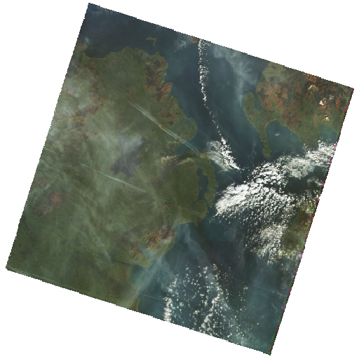
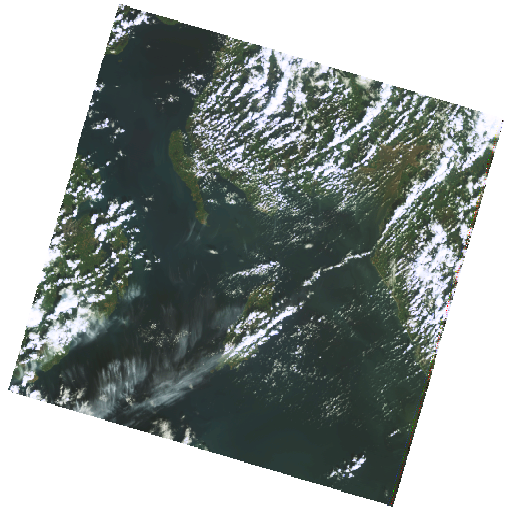
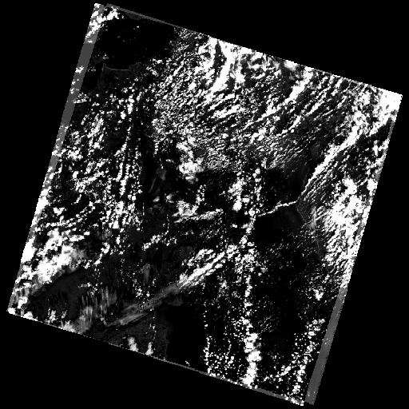
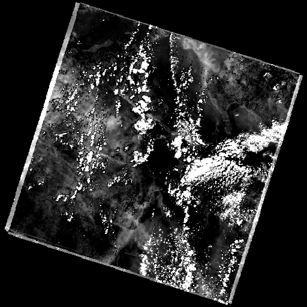
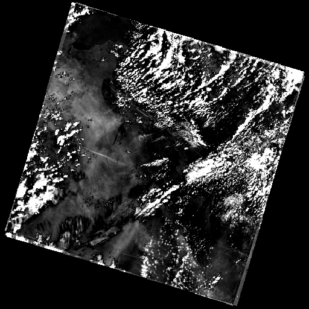
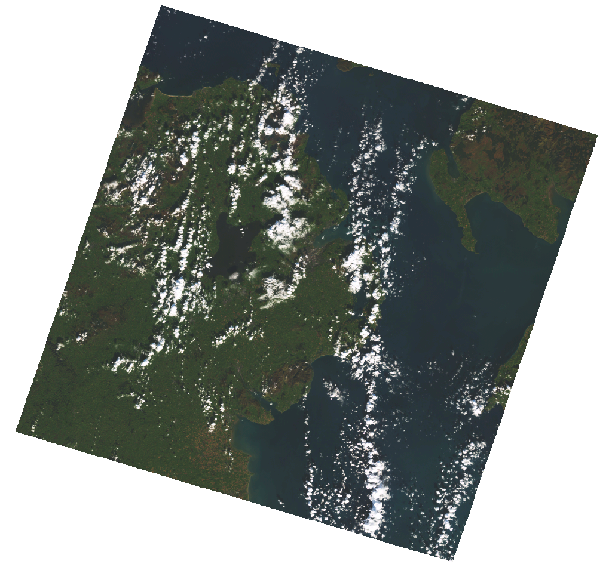
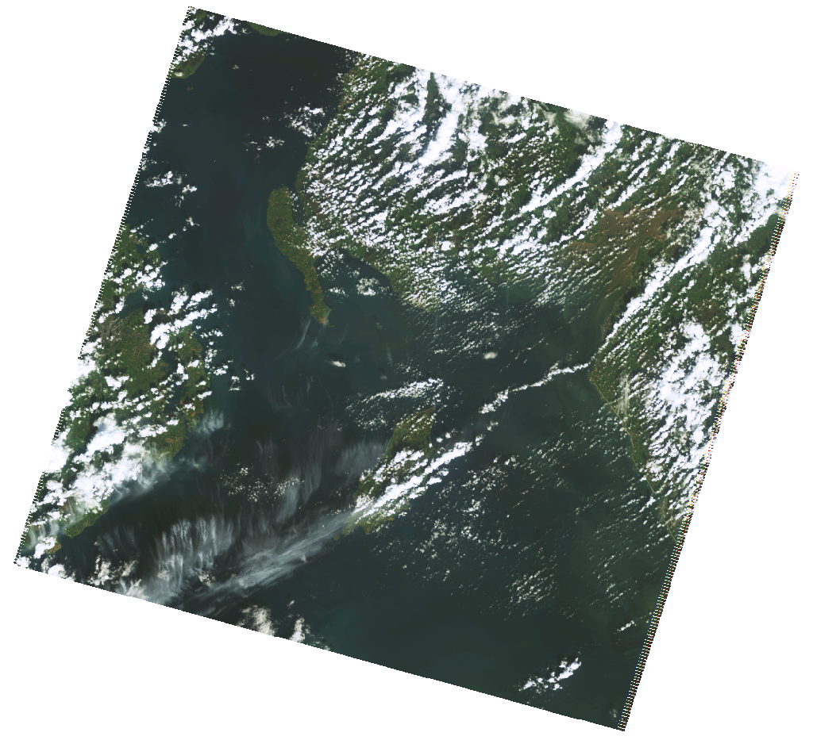

* Irish Grid computed via WGS84 to TM75 Helmert + OSNI Transverse Mercator; validated for relative geometry, absolute value approximate - confirm with an OSNI tool. The exact AOI polygon was not digitised (no reference photograph supplied).
Sources: open Planetary Computer STAC (Landsat) and NASA GIBS (MODIS). Every file is preserved in reports/evidence/2002-2008/ and reproduced here. Full-resolution source scenes are shown at the end.





Method. The 2002 and 2008 AOI crops are georeferenced to the identical geographic bounding box, so they are pixel-co-registered. For each pixel we computed absolute luminance difference |L2002 - L2008|, removed the scene-wide median offset (to cancel uniform sensor / atmosphere / seasonal tone differences), and stretched the remaining local difference to produce the change maps above. Blocks of 16x16 px were ranked by mean local difference; the top blocks are listed with their coordinates. This is a coarse (30 m) land-cover / shoreline change screen.
| Lat (WGS84) | Lon (WGS84) | ING E | ING N | change idx |
|---|---|---|---|---|
| 54.547182 | -5.71908 | 347781 | 374819 | 116.5 |
| 54.547182 | -5.720583 | 347684 | 374808 | 113.9 |
| 54.547182 | -5.719832 | 347733 | 374813 | 110.7 |
| 54.547182 | -5.721335 | 347635 | 374803 | 105.7 |
| 54.546806 | -5.719832 | 347734 | 374772 | 101.8 |
| 54.547182 | -5.722086 | 347586 | 374797 | 98.6 |
| 54.546806 | -5.71908 | 347783 | 374777 | 96.4 |
| 54.546806 | -5.720583 | 347685 | 374766 | 95.9 |
Top changed 16x16 px blocks (~250 m at 30 m GSD). Coordinates are the block centre. Coarse land-cover / shoreline change hotspots - not a burial location.
| Lat (WGS84) | Lon (WGS84) | ING E | ING N | change idx |
|---|---|---|---|---|
| 54.547182 | -5.71908 | 347781 | 374819 | 112.6 |
| 54.547182 | -5.719832 | 347733 | 374813 | 104.9 |
| 54.547182 | -5.720583 | 347684 | 374808 | 104.9 |
| 54.547182 | -5.721335 | 347635 | 374803 | 94.3 |
| 54.547182 | -5.722086 | 347586 | 374797 | 85.3 |
| 54.547182 | -5.722838 | 347538 | 374792 | 79.8 |
| 54.546806 | -5.719832 | 347734 | 374772 | 77.9 |
| 54.546806 | -5.71908 | 347783 | 374777 | 74.9 |
Top changed 16x16 px blocks (~250 m at 30 m GSD). Coordinates are the block centre. Coarse land-cover / shoreline change hotspots - not a burial location.
| Lat (WGS84) | Lon (WGS84) | ING E | ING N | change idx |
|---|---|---|---|---|
| 54.543425 | -5.726595 | 347308 | 374346 | 60.8 |
| 54.543425 | -5.727346 | 347259 | 374340 | 59.8 |
| 54.544552 | -5.722838 | 347547 | 374499 | 59.4 |
| 54.544552 | -5.722086 | 347596 | 374504 | 58.1 |
| 54.544552 | -5.723589 | 347498 | 374493 | 57.9 |
| 54.544928 | -5.721335 | 347643 | 374551 | 57.1 |
| 54.543425 | -5.728098 | 347210 | 374335 | 56.9 |
| 54.544552 | -5.724341 | 347450 | 374488 | 55.1 |
Top changed 16x16 px blocks (~250 m at 30 m GSD). Coordinates are the block centre. Coarse land-cover / shoreline change hotspots - not a burial location.
Observation: the strongest 2002 to 2008 / 2005 to 2008 change concentrates along the north-west of the crop (lat ~54.547, lon ~-5.719 to -5.724), i.e. the Strangford Lough shoreline / estuary margin - consistent with tidal, sedimentary or vegetation change rather than a discrete small object. The 2002 to 2005 pattern is more dispersed. None of these hotspots is a burial site; they are areas worth a human reviewing the high-resolution air photos against.

